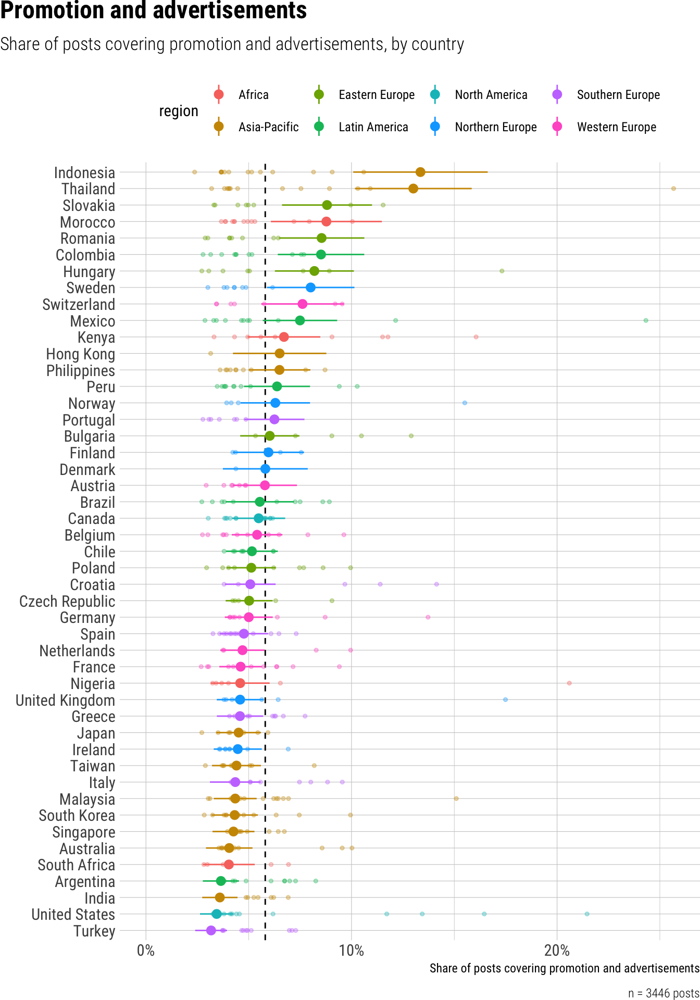
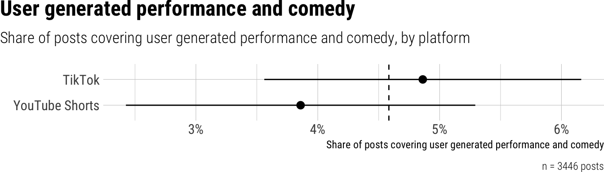
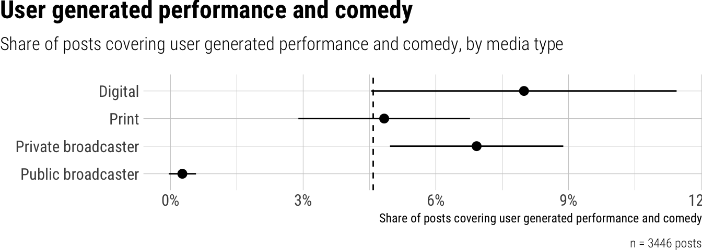
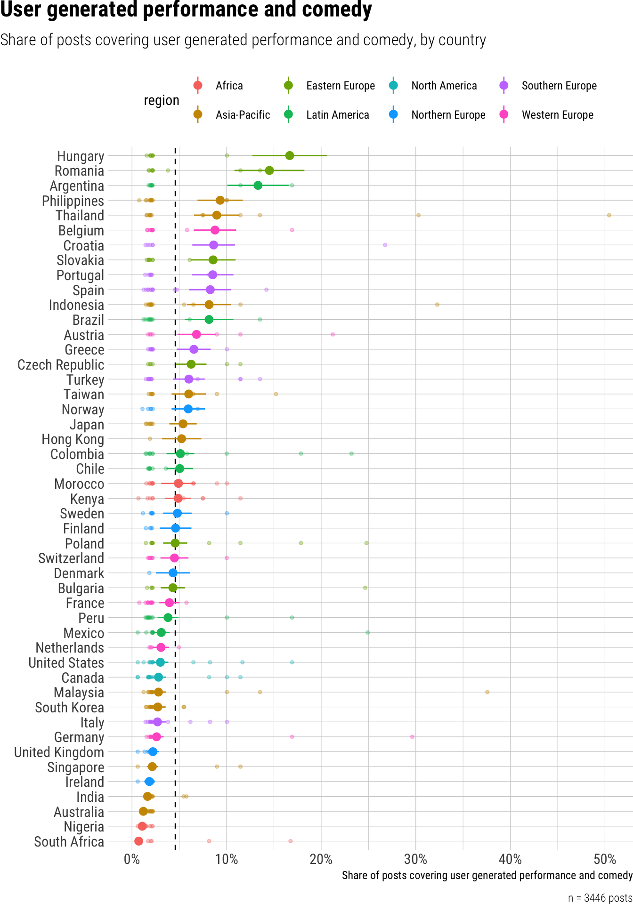

Topics
Overview
We analyzed the topics of the posts by using zero-shot classification of the post title and transcript. Based on the topic list from the Electronic News Archive (ENA) of the University of Antwerp, we coded the presence of 19 from politics to sports, with a few platform-specific additions like user-generated performances, which includes typical dance and lip sync videos, or advertisements and promotions.
Perhaps surprisingly, “hard news” topics like politics and crime dominate, while typical platform content is relatively rarely published by news outlets.
Topic details
In the subsections below, we provide detailed information about all coded news topics, along with comparisons by platform, media type and country.
AI summaries
Note that all the summary texts are generated automatically using a Large Language Model (Google’s Gemini), based on the results tables and other information. Therefore, please do not cite the verbal summary, but refer to the figures for accurate information.
Politics
On average, 38% of short video posts covered political topics. We found small differences between platforms, with YouTube Shorts (43%) showing a slightly higher share of political content compared to TikTok (37%). A significant contrast emerged when comparing outlet types: public broadcasters posted less on political topics compared to digital outlets, with a -0.17 estimate difference. Finally, there were differences across countries, with Poland (59%) and Peru (54%) at the higher end, and Sweden (22%) and Switzerland (23%) at the lower end.


Law enforcement and crime
We found that law enforcement and crime were covered in an average of 31% of short video posts. We observed only minor, non-significant differences between TikTok (31%) and YouTube Shorts (33%). However, significant differences emerged among outlet types, as digital outlets had a lower share of posts on law enforcement and crime than both private (8% difference) and public (10% difference) broadcasters. At the country level, we observed substantial variation, ranging from Italy and Spain (19-20%) to Peru (50%).


War disasters accidents
We found that, on average, 22% of short video posts covered war, disasters, or accidents. We observed a small but significant difference between platforms, with YouTube Shorts (24%) featuring slightly more of this content than TikTok (22%). There were significant contrasts based on outlet type: public broadcasters (34%) had substantially more content on these topics compared to digital-only outlets (10%), while print (18%) and private broadcasters (18%) were in between. By country, we saw the highest prevalence of this content in Nigeria (32%) and South Africa (33%), while countries like Peru (13%) showed the lowest.


Economy and finance
Our analysis of short video posts revealed that an average of 22% of posts cover economy and finance topics. We observed only small, non-significant differences between platforms such as TikTok and YouTube Shorts. However, we found that digital outlets, private and public broadcasters posted a slightly larger share of economy and finance content (23%) than print outlets (20%). Finally, substantial variations were evident across countries, with Taiwan (31%) and Switzerland (28%) showing notably higher shares, while Brazil and Turkey presented the lowest shares at around 14%.


Health and fitness
On average, 11% of short video posts across platforms covered health and fitness topics. We found little difference in the share of health and fitness content between TikTok and YouTube Shorts. We observed that public broadcasters (13%) posted significantly more health and fitness content compared to print outlets (8%). Across countries, the share of health and fitness content varied, ranging from 7% in Malaysia to 16% in Brazil.


Mobility and infrastructure
Our analysis of short videos revealed that, on average, 9% of posts covered mobility and infrastructure. We found a significant difference between platforms, with YouTube Shorts (12%) featuring a higher proportion of mobility and infrastructure content compared to TikTok (9%). We also observed that print outlets (12%) featured more content on this topic than digital outlets (8%). The study also highlights some variation across countries, with Thailand (16%) and Malaysia (14%) showing the highest share of posts covering mobility and infrastructure.


Environment and energy
We found that, on average, 7% of short video posts covered environment and energy topics. The choice of platform, either TikTok or YouTube Shorts, made little difference. However, we observed significant differences depending on the type of outlet: public broadcasters had a 7% higher share of environment and energy posts compared to digital outlets, while print and private broadcasters had 4% and 3% higher shares, respectively, compared to digital outlets. Across countries, the share varied, with Australia showing a higher proportion at 11%.


Science technology and education
Our analysis of short videos reveals that, on average, 12% of posts across platforms covered science, technology, and education. We found only one significant difference across outlet types: Public broadcasters had a significantly higher share of science-related content (18%) compared to digital-only outlets (9%). The differences between platforms were minimal and non-significant. There was variation across countries, with Nigeria and South Africa (Africa) around 17% and Australia and Ireland (Asia-Pacific, Northern Europe) around 16%.


Culture and arts
Our analysis of short videos revealed that, on average, 13% of posts covered culture and arts. We found only small, non-significant differences between TikTok (13%) and YouTube Shorts (12%). However, significant contrasts emerged when examining outlet types, as print outlets showed a higher share of culture and arts content (17%) compared to digital outlets (12%), private broadcasters (11%), and public broadcasters (12%). Across different countries, we observed variation, with Italy and Spain posting the highest share (23%), while the United States and South Korea posted the lowest (9%).


Lifestyle and travel
We found that, on average, 9% of short video posts across platforms covered lifestyle and travel topics. We observed significant differences in the prevalence of these topics across platforms, with TikTok showing a higher share (10%) compared to YouTube Shorts (6%). The outlet type—digital, print, public, or private broadcaster—had little impact on the share of posts dedicated to lifestyle and travel. Across countries, Switzerland had the highest share of posts related to lifestyle and travel (30%), while other countries varied, but no additional significant differences were found.


Fashion and beauty
We found that fashion and beauty content constituted approximately 2% of the analyzed short video posts. There were small, non-significant differences between platforms, with TikTok and YouTube Shorts showing similar proportions. However, we observed significant differences based on outlet type: digital outlets and private broadcasters showed a slightly higher share of fashion and beauty content compared to public broadcasters (3% vs. 1% respectively). Across different countries, the share of fashion and beauty content remained relatively consistent.


Food and cooking
We found that, on average, food and cooking content represented about 5% of the analyzed short video posts. The share of food and cooking content was similar on TikTok and YouTube Shorts. Digital outlets showed a significantly higher share of food and cooking content compared to print and public broadcasters. Across countries, the share varied, with Switzerland showing the highest proportion at 16%, while countries like Ireland, Poland, Sweden, the United Kingdom, and the United States showed much lower proportions around 3%.


Pets and animals
We found that, on average, 3% of short video posts are about pets and animals. When comparing platforms, TikTok (4%) showed a slightly higher share of pet and animal content compared to YouTube Shorts (3%). We observed a significant difference based on the type of outlet, with public broadcasters showing a lower share of pet and animal content compared to digital outlets. Finally, the share of posts on pets and animals varied across countries, but we did not highlight specific significant differences.


Entertainment news and industry
Our analysis of short video posts revealed that an average of 15% of content focuses on entertainment news and the industry. We found negligible differences in the share of entertainment news across TikTok (15%) and YouTube Shorts (14%). However, we observed significant variations across outlet types: Public broadcasters showed a higher share of entertainment news (18%) compared to digital-only outlets (9%), and private broadcasters also showed a higher share of entertainment news (14%) compared to digital-only outlets. Finally, there were variations across countries, with Croatia showing a higher share (24%) and Malaysia a lower share (6%) of entertainment news.


Celebrity and royalty
We analyzed short video posts and found that, on average, 15% of them covered celebrities and royalty. There were no significant differences between TikTok and YouTube Shorts platforms. However, we observed that print outlets (19%) featured celebrity and royalty content more often than digital outlets (14%) and private broadcasters (13%). Across countries, Spain had the highest share (23%), while Indonesia had a relatively low share (10%).


Sports
Our analysis of short video posts revealed that, on average, 8% of posts covered sports. We found a small but significant difference between platforms, with TikTok having a slightly higher proportion of sports-related content (8%) compared to YouTube Shorts (7%). Additionally, public broadcasters (9%) featured sports more often than private broadcasters (6%). Finally, the share of posts covering sports varied little across countries.


Promotion and advertisements
We found that, on average, 6% of short video posts covered promotion and advertisements. The platform used (TikTok or Youtube Shorts) had small, non-significant differences in the share of posts covering promotion and advertisements. We observed significant differences based on the type of outlet, with digital outlets showing a higher share (8%) compared to public broadcasters (4%). Across countries, the share varied, with Indonesia and Thailand showing particularly high shares (13% each), while Turkey and the United States showed the lowest shares (3% each).



User generated performance and comedy
We found that, on average, user-generated performance and comedy content comprised about 5% of short video posts. There was little difference between platforms, with TikTok at 5% and YouTube Shorts at 4%. However, there were significant differences based on outlet type: digital outlets showed a higher share of this content (8%) compared to public broadcasters, which had almost none. Across countries, the share varied considerably, with Hungary showing the highest proportion at 17%, while countries like Nigeria and South Africa were at the lower end, with only about 1%.



Measures
The following instructions were used for zero-shot classification of the posts:
Your task is to analyze the provided short video content (derived from caption text and transcripts) and determine whether its topic explicitly falls into one or more of the following categories. Your decision for each category must be based only on direct and explicit mentions of the category’s subject matter within the caption text or transcript. Do not infer or extrapolate beyond the directly stated information. If a category’s subject is not explicitly mentioned, even if indirectly related, you must classify it as “False.” If you cannot assign any category, use the comment field to suggest a topic, otherwise use the comment field to provide explicit text references for all categories you assigned.
Please evaluate the provided short video content against each of the following 19 categories independently:
politics: Code “True” if the caption text or transcript explicitly discusses political structures, electoral processes, or international governance. This includes explicit mentions of political organizations, elections, migration policies, and international relations between countries.
law_enforcement_and_crime: Code “True” if the caption text or transcript explicitly deals with the legal system, law enforcement activities, or criminal acts. This includes explicit mentions of the judiciary, crime policy, specific instances of crime, and civil rights and freedoms.
war_disasters_accidents: Code “True” if the caption text or transcript explicitly reports on armed conflicts, defense matters, or major calamitous events. This includes explicit discussions of war and peace, weaponry, and natural or man-made disasters and accidents.
economy_and_finance: Code “True” if the caption text or transcript explicitly focuses on economic activity, financial markets, or labor. This includes explicit mentions of finance (e.g., banking, stock markets), the general economy, consumer affairs, and labor issues like employment or wages.
social_affairs: Code “True” if the caption text or transcript explicitly is centered on broad societal issues and demographic trends. This includes explicit mentions of social policies like healthcare, social security, and housing, as well as population growth or aging.
health_and_fitness: Code “True” if the caption text or transcript explicitly focuses on personal health, medical conditions, physical fitness, or wellness. This includes explicit mentions of diet, exercise, mental health, and general medical advice, distinct from healthcare policy.
mobility_and_infrastructure: Code “True” if the caption text or transcript explicitly discusses transportation systems or public works. This includes explicit mentions of mobility, traffic, and spatial planning, such as urban development or infrastructure projects.
environment_and_energy: Code “True” if the caption text or transcript explicitly concerns the natural world, energy resources, or food production. This includes explicit mentions of environmental protection, nature conservation, energy policy, and agriculture.
science_technology_and_education: Code “True” if the caption text or transcript explicitly is about scientific research, technological advancements, or education systems. This includes explicit mentions of cultural patrimony, the education sector, aerospace exploration, and telecommunication.
culture_and_arts: Code “True” if the caption text or transcript explicitly focuses on creative and fine arts or matters of faith. This includes explicit mentions of performing arts (e.g., theater, dance), literature, visual arts (e.g., painting), and religion.
lifestyle_and_travel: Code “True” if the caption text or transcript explicitly covers personal interests, leisure activities, travel, or daily routines. This includes explicit mentions of general lifestyle topics (e.g., hobbies), tourism, personal vlogs, and “day-in-the-life” content.
fashion_and_beauty: Code “True” if the caption text or transcript explicitly focuses on clothing, accessories, personal style, makeup, skincare, or cosmetic products. This includes explicit mentions of fashion hauls, outfit styling, makeup tutorials, and product reviews within these areas.
food_and_cooking: Code “True” if the caption text or transcript explicitly discusses recipes, cooking techniques, food preparation, dining experiences, food reviews, or specific food items. This includes explicit mentions of quick meals, baking, restaurant reviews, and food-related challenges.
pets_and_animals: Code “True” if the caption text or transcript explicitly features or discusses domestic pets, wild animals, animal behavior, or animal care, with the primary focus being the animal itself.
entertainment_news_and_industry: Code “True” if the caption text or transcript explicitly discusses news, releases, reviews, or industry aspects related to professional film, television, or music. This includes explicit mentions of movie releases, album launches, TV show reviews, film festivals, and the business operations of traditional media companies.
celebrity: Code “True” if the caption text or transcript explicitly focuses on the personal lives, private relationships, or non-professional activities of famous individuals. For any famous individual (e.g., politician, athlete, pop star, royals), code “True” only if the content explicitly concerns their personal life or non-professional activities. Otherwise, their professional activities should only be classified under the relevant category such as politics, sports, etc. Attention: Simply mentioning a famous person, e.g. a president or queen, is not sufficient for a post being coded as “True” celebrity news.
sports: Code “True” if the caption text or transcript explicitly is about sports as a field of activity. This includes explicit coverage of sporting events, competitions, games, teams, and the professional performance of sports athletes.
promotion_and_advertisements: Code “True” if the caption text or transcript explicitly promotes a product, service, brand, event, or specific call to action with a commercial intent. This includes explicit mentions of sales, discounts, sponsorships, brand endorsements, or direct calls to purchase or visit a business.
user_generated_performance_and_comedy: Code “True” if the caption text or transcript explicitly features or discusses performances by users, often for entertainment, and/or comedic content. This includes explicit mentions of dance routines, lip-sync videos, short-form skits, memes, and viral trends where a user’s performance or comedic element is central.
Post were coded using zero-shot classification by two different models: Nemotron Ultra 253B, Gemma3 27B.
| Variable | Posts | Models | Agreement | Krippendorffs_Alpha |
|---|---|---|---|---|
| Politics | 2514 | 2 | 0.95 | 0.90 |
| Law enforcement and crime | 2514 | 2 | 0.94 | 0.87 |
| War disasters accidents | 2514 | 2 | 0.96 | 0.85 |
| Economy and finance | 2514 | 2 | 0.95 | 0.86 |
| Social affairs | 2514 | 2 | 0.94 | 0.77 |
| Health and fitness | 2514 | 2 | 0.96 | 0.79 |
| Mobility and infrastructure | 2514 | 2 | 0.96 | 0.79 |
| Environment and energy | 2514 | 2 | 0.97 | 0.76 |
| Science technology and education | 2514 | 2 | 0.96 | 0.77 |
| Culture and arts | 2514 | 2 | 0.96 | 0.82 |
| Lifestyle and travel | 2514 | 2 | 0.96 | 0.73 |
| Fashion and beauty | 2514 | 2 | 0.99 | 0.76 |
| Food and cooking | 2514 | 2 | 0.99 | 0.87 |
| Pets and animals | 2514 | 2 | 1.00 | 0.94 |
| Entertainment news and industry | 2514 | 2 | 0.94 | 0.74 |
| Celebrity and royalty | 2514 | 2 | 0.93 | 0.71 |
| Sports | 2514 | 2 | 0.98 | 0.88 |
| Promotion and advertisements | 2514 | 2 | 0.95 | 0.62 |
| User generated performance and comedy | 2514 | 2 | 0.93 | 0.39 |
Social affairs
We found that social affairs were covered in an average of 18% of the short videos analyzed. Significant differences emerged between platforms, with TikTok (20%) showing a higher share of social affairs content compared to YouTube Shorts (12%). Furthermore, public broadcasters (24%) featured a significantly higher proportion of social affairs content compared to digital outlets (14%). Finally, there were some differences by country, for instance, the share was higher in Kenya and South Africa (24% each), and lower in Hong Kong (11%).